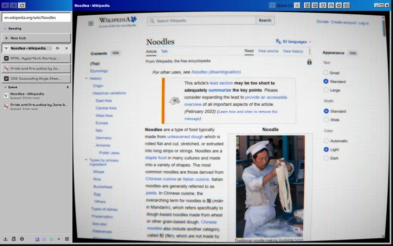
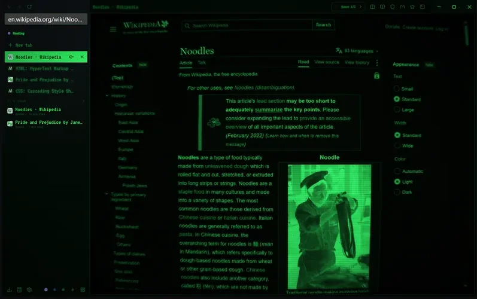
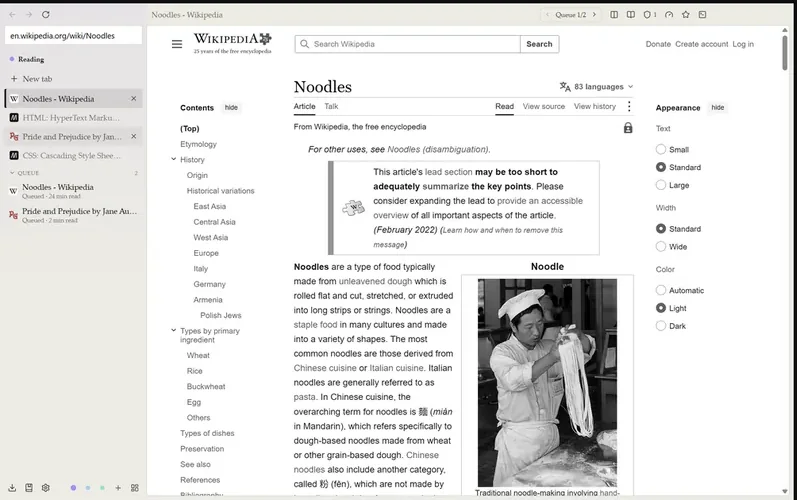
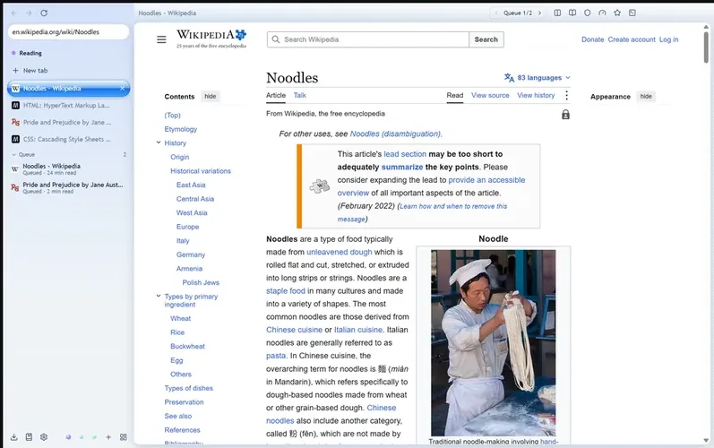

Skins
Nine skins, from Paper to a curved CRT.
A skin restyles the whole window and can add page effects: scanlines, tint, grayscale, dithering, a pixel font, or a full CRT screen drawn with WebGPU that bends the page and adds an aperture grille, bloom and scanlines.






The nine that ship with Noodle
Each space can have its own skin, so your reading space can look like paper while the rest stays dark.
- Noodle
Noodle's own look, dark or light with the system. - Black
True black for OLED screens. - High contrast
White on black, thick focus rings, yellow highlights. - Paper
Warm e-ink grays, no motion. Pairs with Battery mode. - Classic 98
Grey bevels, a blue title strip and a pixel font. - Phosphor
A green terminal that turns on the full CRT screen. - Phosphor Amber
The same terminal in amber. - Glass 2000
Pinstripes, aqua gel buttons and frosted panels. - Blueprint
White line work on drafting blue, pencil yellow accents.
Make your own
A skin is a zip with some JSON and CSS.
A .skin file holds a manifest, optional CSS and its pictures and fonts. Open one to install it, and Noodle shows it for 15 seconds with Keep and Revert before saving anything.
Start in the built-in editor, or point dev mode at a folder and Noodle reloads the skin every time you save. Layout settings can move the sidebar to the right, hide it until you point at it, put tabs along the top and change the density.
{
"name": "Starter",
"version": "1.0.0",
"mode": "both",
"tokens": {
"dark": {
"bg": "#12161a",
"text": "#e3e8ec",
"accent": "#5fc490",
"radius": "12px"
}
},
"layout": { "gap": 10, "radius": 12 }
}